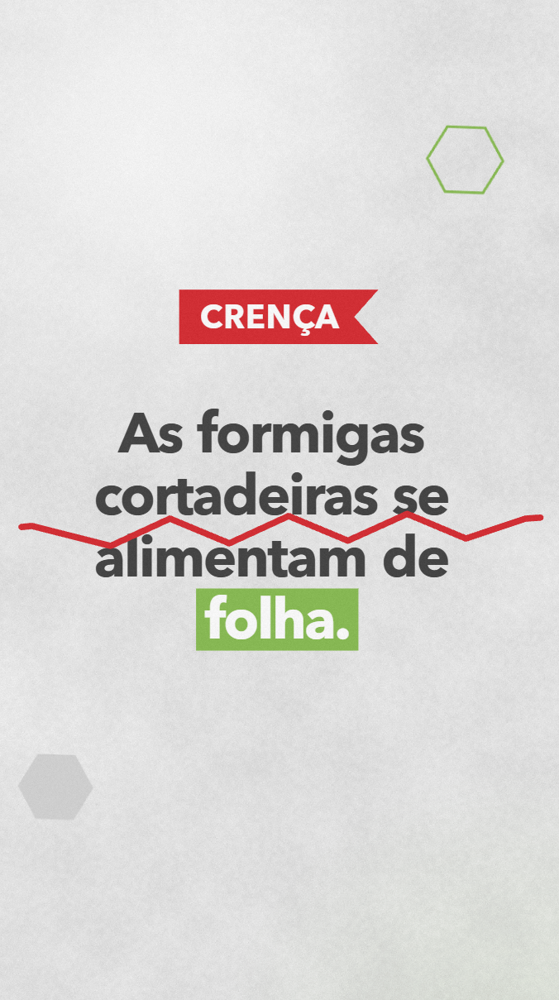
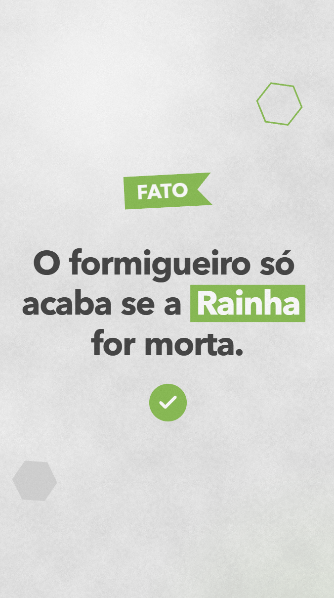

afirmações do folheto Fatos e Crenças
PROPOSTA DE SÉRIE · MIREX-S
Cortando
Mitos
Fatos e crenças sobre as formigas cortadeiras, um episódio por vez.
2 temporadas · 20 episódios · vídeos verticais de cerca de 40 s
Conhecer a proposta ↗DO FOLHETO PARA A TELA 9:16
A PROPOSTA
O folheto vira uma série
episódios em 2 temporadas de 10
por episódio, vertical, com locução
episódios prontos para aprovar
Um mito por semana, com começo, meio e fim, e duas assinaturas visuais que o público aprende a reconhecer: a crença é cortada, o fato é carimbado.
O PONTO DE PARTIDA
O produtor já está no celular. O folheto, ainda não.
das propriedades rurais têm internet, nem que seja só pelo celular
usam o WhatsApp para buscar informação para decisões de negócio
usam o YouTube como canal de orientação técnica
usam sites de busca para se informar (eram 49% em 2021)
As 29 respostas do Fatos e Crenças já existem. A série leva essas respostas para onde o produtor procura informação.
Fonte: 9ª Pesquisa ABMRA Hábitos do Produtor Rural, resultados preliminares de set/2025 (3.100 produtores, 16 estados), via Canal Rural e Forbes Agro.
A DEFESA
Por que uma série, e não posts soltos
Encontro marcado
Episódios numerados criam hábito: o público volta para ver o próximo e o perfil ganha seguidores, não só visualizações.
Retenção até o fim
Cada episódio abre com uma pergunta e só dá o veredito no meio. Assistir até o fim é o sinal que faz as plataformas mostrarem o vídeo para mais gente.
Autoridade antes da venda
A Mirex-S ensina primeiro. Quando a Temporada 2 falar de isca, a marca já é a fonte que desfez 10 mitos.
Assunto de conversa
Mito é o que se conta na roda, na revenda e no grupo. “Fato ou crença?” vira jogo, comentário e compartilhamento.
O FORMATO
Um arquivo, quatro vitrines
200 bi
de visualizações por dia nos YouTube Shorts, o formato vertical curto do YouTube
9:16
Instagram Reels
No perfil da Mirex-S, onde os posts já acontecem
YouTube Shorts
No canal Mirex-S, ao lado da versão longa
Status e grupos da equipe
de campo e das revendas
TikTok
Opcional, para alcançar um público novo
Fonte: Neal Mohan, CEO do YouTube, no Cannes Lions, jun/2025 (TheWrap).
O FORMATO
A anatomia de um episódio
Gancho
A pergunta, em 3 segundos
Abertura
Cortando Mitos · Ep. N
Afirmação
A frase do folheto, sozinha
Veredito
CRENÇA é cortada,
FATO é carimbado
Prova
Imagem, número ou o corte do solo
Explicação
O porquê, em linguagem de campo
Consequência
O que isso muda na prática
Resumo
A frase para repetir na roda
Próximo
Teaser, assinatura e aviso legal
30 a 45 s · vertical 9:16 · locução, trilha e efeitos próprios · aviso legal ATENÇÃO no cartão final
O FORMATO
Duas assinaturas que o público aprende a ler

CRENÇA
A frase é cortada em zigue-zague, como a folha pela mandíbula da formiga.
↯
FATO
A frase é carimbada: a etiqueta cai sobre ela, e o check entra.
✓A REGRA DA SÉRIE
Uma pergunta por episódio.
Nenhuma resposta antes da hora.
É o controle de informação que mantém a série interessante
por 20 episódios, sem repetir assunto.
CONTROLE DE INFORMAÇÃO
Como 29 afirmações viram 20 episódios
Uma pergunta
Cada episódio responde a uma afirmação do folheto, ou a duas que têm a mesma resposta.
Pode lembrar
Um episódio pode citar os anteriores. Isso convida a maratonar a série.
Nunca antecipa
Nenhum episódio dá a resposta de um episódio futuro. Cada roteiro tem um campo “Não revela”.
| Afirmações do folheto que têm a mesma resposta | Viram um episódio |
|---|---|
| Água fervente + óleo quente no olheiro | Ep. 06 |
| Formiga avisa as outras + devolve a isca | Ep. 12 |
| Isca no carreiro + isca dentro do olheiro | Ep. 15 |
| Isca com cheiro estranho + isca úmida | Ep. 16 |
| Rejeição de isca + amuado não carrega + aplicar aos poucos | Ep. 18 |
| Amuado volta a cortar + intervalo de reaplicação | Ep. 19 |
| Só a rainha encerra o formigueiro + a rainha vive 20 anos | Ep. 02 |
AS TEMPORADAS
Duas temporadas, dois objetivos
TEMPORADA 1 · EP. 01 A 10
Conheça a cortadeira
Biologia e receitas caseiras: os mitos que todo mundo já ouviu.
Objetivo: alcance e seguidores.
9 crenças · 1 fato
Explorar temporada ↗TEMPORADA 2 · EP. 11 A 20
Isca do jeito certo
Como a isca funciona, onde aplicar, como guardar e quando reaplicar.
Objetivo: confiança técnica e preferência pela marca.
6 crenças · 4 fatos
Explorar temporada ↗TEMPORADA 1 · ALCANCE
Conheça a cortadeira
| Ep. | Gancho | Veredito | O que o episódio revela |
|---|---|---|---|
| 01 | Formiga come folha? ↗ | CRENÇA | Elas cultivam o fungo que comem |
| 02 | Matou a rainha, acabou? ↗ | FATO | Só a rainha se reproduz; vive até 20 anos |
| 03 | 50 vezes o próprio peso? ↗ | CRENÇA | Carregam de 10 a 15 vezes o próprio peso |
| 04 | Elas atacam qualquer planta? ↗ | CRENÇA | Cada saúva tem suas plantas preferidas |
| 05 | O formigueiro mudou de lugar? ↗ | CRENÇA | Ele não migra: abre olheiros e cresce |
| 06 | Água fervente resolve? ↗ | CRENÇA | Líquido quente não chega às câmaras fundas |
| 07 | Gergelim acaba com formiga? ↗ | CRENÇA | Não há eficácia comprovada |
| 08 | Matou as do carreiro, acabou? ↗ | CRENÇA | A rainha repõe a população |
| 09 | O trator resolve? ↗ | CRENÇA | Revirar o solo não elimina os grandes |
| 10 | Existe controle biológico? ↗ | CRENÇA | Ainda não há biológico eficiente e viável |
TEMPORADA 1 · EPISÓDIO 01
CRENÇA
Formiga come folha?
Folheto: “As formigas cortadeiras alimentam-se de folha.”
- PROVA VISUAL
- Mergulho no formigueiro: régua de 0 a 8 m e contador de 8.000 câmaras de fungo
- NÃO REVELA
- Nada sobre a rainha nem sobre como controlar o formigueiro
LOCUÇÃO GRAVADA · PRONTO
Você acha que formiga come folha? Cortando Mitos. Episódio um. Muita gente acha que elas comem folha. Mas isso… é crença. Nada disso. Elas levam a folha pra dentro do formigueiro. O formigueiro chega a oito metros de profundidade… com até oito mil câmaras de fungo. A folha vira substrato para cultivar um fungo. Esse é o verdadeiro alimento da colônia. Até sete milhões de formigas dependem dele. Se o fungo acaba… todas morrem. Resumindo: formiga não come folha. Formiga cultiva o fungo que come. Acompanhe pra ver o próximo episódio. Cortando Mitos. Uma série Mirex-S.
TEMPORADA 1 · EPISÓDIO 02
FATO
Matou a rainha, acabou?
Folheto: “O formigueiro só acaba se a Rainha for morta.”
- PROVA VISUAL
- Carimbo FATO; milhares de formigas ficam cinza e só a rainha continua verde; contador de 20 anos
- NÃO REVELA
- Que o formigueiro “some e volta” (Ep. 19) nem como se controla
LOCUÇÃO GRAVADA · PRONTO
Se a rainha morre… o formigueiro acaba? Cortando Mitos. Episódio dois. O formigueiro só acaba se a rainha for morta. E isso… é… fato. A rainha é a única formiga do ninho que se reproduz. Ela é a mãe de toda a população… e passa a vida inteira pondo ovos. Todas as outras são fêmeas estéreis. Nenhuma delas se reproduz. Enquanto a rainha estiver viva, a colônia se refaz. E uma rainha de saúva pode viver vinte anos. Então é fato: o formigueiro só acaba quando a rainha morre. Acompanhe pra ver o próximo episódio. Cortando Mitos. Uma série Mirex-S.
TEMPORADA 1 · EPISÓDIO 03
CRENÇA
50 vezes o próprio peso?
Folheto: “As cortadeiras carregam 50 vezes o seu peso.”
- PROVA VISUAL
- O “50×” é cortado em zigue-zague; o contador cai para 10–15×; comparação pessoa × carro
- REVELA
- Capacidade real: 10 a 15 vezes o próprio peso, conforme a espécie
LOCUÇÃO · CERCA DE 40 S
Dizem que uma formiga carrega cinquenta vezes o próprio peso. Será? Cortando Mitos. Episódio três. As cortadeiras carregam cinquenta vezes o seu peso. Isso… é crença. Elas são ótimas carregadeiras, mas não chegam a tanto. Na verdade, uma cortadeira carrega de dez a quinze vezes o peso do próprio corpo, dependendo da espécie. Seria como uma pessoa de setenta quilos levando um carro pequeno nas costas. Resumindo: cinquenta vezes, não. De dez a quinze. E isso já é muita força. Acompanhe pra ver o próximo episódio. Cortando Mitos. Uma série Mirex-S.
LEMBRA
Nenhum episódio anterior
NÃO REVELA
As preferências de planta (Ep. 04)
TEMPORADA 1 · EPISÓDIO 04
CRENÇA
Elas atacam qualquer planta?
Folheto: “As formigas cortadeiras atacam qualquer planta.”
- PROVA VISUAL
- Pares que se acendem: eucalipto com saúva-limão, pastagem com saúva-parda
- REVELA
- Elas têm preferência pelas plantas que servem melhor ao fungo
LOCUÇÃO · CERCA DE 37 S
Formiga cortadeira ataca qualquer planta? Cortando Mitos. Episódio quatro. As cortadeiras atacam qualquer planta. Isso… é crença. Elas cortam muitas espécies, de folha larga e de folha estreita. Mas têm um jeito natural de escolher as plantas que servem melhor para cultivar o fungo. Ou seja: elas têm preferência. O eucalipto atrai muito a saúva-limão. Já a pastagem… atrai a saúva-parda. Resumindo: não é qualquer planta. É a planta certa para o fungo. Acompanhe pra ver o próximo episódio. Cortando Mitos. Uma série Mirex-S.
LEMBRA
Ep. 01: o fungo é o alimento
NÃO REVELA
Nada sobre controle ou receitas caseiras
TEMPORADA 1 · EPISÓDIO 05
CRENÇA
O formigueiro mudou de lugar?
Folheto: “Os sauveiros migram de uma área para outra.”
- PROVA VISUAL
- Vista de cima: olheiros novos brotam cada vez mais longe, todos ligados ao mesmo ninho
- REVELA
- O sauveiro não migra: abre novos olheiros e cresce ao longo dos anos
LOCUÇÃO · CERCA DE 41 S
Apareceu formiga do outro lado da área. O formigueiro mudou de lugar? Cortando Mitos. Episódio cinco. Os sauveiros migram de uma área para outra. Isso… é crença. Conforme o sauveiro cresce, ele abre novos olheiros… às vezes bem longe dos primeiros. Por isso parece que ele mudou. Mas o sauveiro nunca muda de lugar. Ele só aumenta a sua estrutura, ano após ano. E com uma rainha que pode viver vinte anos… tempo pra crescer não falta. Resumindo: ele não migrou. Ele cresceu. Acompanhe pra ver o próximo episódio. Cortando Mitos. Uma série Mirex-S.
LEMBRA
Ep. 02: a rainha vive 20 anos
NÃO REVELA
Como acabar com o sauveiro
TEMPORADA 1 · EPISÓDIO 06
CRENÇA
Água fervente resolve?
Folheto: “Água fervente é um método caseiro eficiente” e “Óleo quente nos olheiros elimina o formigueiro.”
- PROVA VISUAL
- O mergulho do Ep. 01 de novo: o líquido desce e para nas primeiras câmaras
- REVELA
- Líquido quente só mata perto do olheiro; as câmaras fundas ficam intactas
LOCUÇÃO · CERCA DE 41 S
Água fervente… ou óleo quente no olheiro. Resolve? Cortando Mitos. Episódio seis. Água fervente e óleo quente acabam com o formigueiro. Isso… é crença. O formigueiro tem uma arquitetura complexa de túneis e câmaras, com ventilação e circulação rápida, que bloqueia a entrada de líquidos. O máximo que a água quente faz é matar as formigas perto do olheiro. Lá embaixo, as câmaras mais profundas ficam intactas… e a rainha continua viva. Resumindo: pode parecer que resolveu. Mas não chegou onde importa. Acompanhe pra ver o próximo episódio. Cortando Mitos. Uma série Mirex-S.
LEMBRA
Ep. 01 (8 m de profundidade) e Ep. 02 (a rainha)
NÃO REVELA
“Formigueiro amuado” e inseticida líquido (Ep. 17)
TEMPORADA 1 · EPISÓDIO 07
CRENÇA
Gergelim acaba com formiga?
Folheto: “O gergelim controla os formigueiros.”
- PROVA VISUAL
- Bilhete de “receita da vó” com gergelim; o corte atravessa o papel
- REVELA
- O gergelim não tem eficácia comprovada contra as cortadeiras
LOCUÇÃO · CERCA DE 30 S (EPISÓDIO CURTO)
Plantar gergelim acaba com a formiga? Cortando Mitos. Episódio sete. O gergelim controla os formigueiros. Isso… é crença. O gergelim aparece em muita receita caseira como solução. Mas os estudos mostram que ele não tem eficácia no controle das formigas cortadeiras. Resumindo: a dica passa de boca em boca… mas o formigueiro continua lá. Acompanhe pra ver o próximo episódio. Cortando Mitos. Uma série Mirex-S.
LEMBRA
Ep. 06: as receitas caseiras
NÃO REVELA
O que funciona (Temporada 2)
TEMPORADA 1 · EPISÓDIO 08
CRENÇA
Matou as do carreiro, acabou?
Folheto: “Matando as formigas no carreiro o formigueiro acaba.”
- PROVA VISUAL
- A trilha esvazia; dentro do ninho, a linha do tempo ovo, larva, pupa e adulta (62 dias)
- REVELA
- As do carreiro só carregam folha; a rainha repõe a população
LOCUÇÃO · CERCA DE 42 S
Matou todas as formigas do carreiro. Acabou o problema? Cortando Mitos. Episódio oito. Matando as formigas no carreiro, o formigueiro acaba. Isso… é crença. As formigas do carreiro têm uma única função: levar folhas para dentro. Sem elas, o corte para por um tempo. Mas lá dentro o formigueiro continua ativo… e a rainha segue pondo ovos. Do ovo à formiga adulta são cerca de sessenta e dois dias. A população se repõe. Resumindo: você atacou quem carrega a folha. Não quem mantém a colônia. Acompanhe pra ver o próximo episódio. Cortando Mitos. Uma série Mirex-S.
LEMBRA
Ep. 02: a rainha refaz a colônia
NÃO REVELA
Que o formigueiro volta a cortar
(Ep. 19)
TEMPORADA 1 · EPISÓDIO 09
CRENÇA
O trator resolve?
Folheto: “No preparo de solo o trator elimina os formigueiros.”
- PROVA VISUAL
- Corte do solo: a grade revira só a camada de cima; abaixo, ninhos de vários tamanhos seguem intactos
- REVELA
- Revolver o solo não elimina formigueiros médios e grandes
LOCUÇÃO · CERCA DE 35 S
Passou o trator, revirou a terra. Acabou o formigueiro? Cortando Mitos. Episódio nove. No preparo de solo, o trator elimina os formigueiros. Isso… é crença. Seria ótimo. Mas só revirar o solo não basta para acabar com formigueiros de tamanho médio a grande. E, na mesma área, convivem formigueiros em vários estágios, dos pequenos aos enormes. Resumindo: a máquina mexe na superfície. O problema continua lá embaixo. Acompanhe pra ver o próximo episódio. Cortando Mitos. Uma série Mirex-S.
LEMBRA
Ep. 01: a profundidade do ninho
NÃO REVELA
A isca nem o método certo (Temporada 2)
TEMPORADA 1 · EPISÓDIO 10 · FINAL
CRENÇA
Existe controle biológico?
Folheto: “Existem controles biológicos para formigas cortadeiras.”
- PROVA VISUAL
- A colônia como fortaleza: agentes infecciosos batem e voltam; montagem de fim de temporada
- REVELA
- Ainda não há biológico eficiente e viável; a Mirex-S pesquisa o tema
LOCUÇÃO · CERCA DE 40 S
Existe um jeito biológico de controlar a cortadeira? Cortando Mitos. Episódio dez. Existem controles biológicos para formigas cortadeiras. Isso… ainda é crença. Até hoje, não se conhece um produto biológico eficiente e viável no campo para controlar as cortadeiras. Até porque elas têm um mecanismo eficiente para eliminar agentes infecciosos do formigueiro. Mas essa é uma área de pesquisa de interesse da Mirex-S, em busca de tecnologias com eficácia e menor impacto ambiental. E então… o que funciona? Isso fica para a próxima temporada. Cortando Mitos. Uma série Mirex-S.
LEMBRA
Ep. 01 a 09, na montagem final
NÃO REVELA
A resposta para “o que funciona?”
TEMPORADA 2 · CONFIANÇA E CONVERSÃO
Isca do jeito certo
| Ep. | Gancho | Veredito | O que o episódio revela |
|---|---|---|---|
| 11 | Isca formicida explode? ↗ | CRENÇA | É polpa cítrica: não solta gás |
| 12 | Formiga avisa as outras? ↗ | FATO | Elas se alertam por feromônios |
| 13 | Como a isca chega lá no fundo? ↗ | FATO | Age por ingestão, devagar, sem ser notada |
| 14 | A isca envenena o fungo? ↗ | CRENÇA | Age nas jardineiras; o fungo fica sem cuidado |
| 15 | No carreiro ou no olheiro? ↗ | CRENÇA | O lugar certo é ao lado do carreiro |
| 16 | Isca guardada errado funciona? ↗ | FATO | Cheiro forte e umidade estragam a isca |
| 17 | Veneno líquido resolve? ↗ | CRENÇA | Líquido amua, mas não elimina |
| 18 | Tem formiga que rejeita isca? ↗ | CRENÇA | Não é rejeição: é formigueiro amuado |
| 19 | O formigueiro sumiu… acabou? ↗ | FATO | Volta em ~90 dias; reaplicar em 3 a 4 meses |
| 20 | Serve pra formiga de casa? ↗ | CRENÇA | A isca é só para cortadeiras |
Reserva: “Sulfluramida e Fipronil juntos têm maior eficiência” (CRENÇA), se aprovado na revisão técnica e jurídica.
TEMPORADA 2 · EPISÓDIO 11
CRENÇA
Isca formicida explode?
Folheto: “As iscas formicidas soltam gás e podem explodir.”
- PROVA VISUAL
- Ícone de explosão cortado em zigue-zague; macro do pellet de polpa cítrica
- REVELA
- A isca é feita de polpa cítrica e não produz gás
LOCUÇÃO · CERCA DE 30 S (ESTREIA DA TEMPORADA)
Dizem que isca formicida solta gás… e pode até explodir. Cortando Mitos. Episódio onze. As iscas formicidas soltam gás e podem explodir. Isso… é crença. A tecnologia da isca formicida não foi feita para soltar gás. A isca é feita de polpa cítrica, em pequenos pellets. Resumindo: isca formicida não produz gás. E não explode. Acompanhe pra ver o próximo episódio. Cortando Mitos. Uma série Mirex-S.
LEMBRA
Ep. 10: “o que funciona?”
NÃO REVELA
Como o tóxico age (Ep. 13)
TEMPORADA 2 · EPISÓDIO 12
FATO
Formiga avisa as outras?
Folheto: “Se a formiga perceber o tóxico de uma isca ela avisa as outras” e “A formiga devolve a isca se percebe que é tóxica.”
- PROVA VISUAL
- Ondas de feromônio passam de ícone em ícone (a colônia do Ep. 02); a isca sai do ninho
- REVELA
- Elas se comunicam por feromônios e, com ação rápida, devolvem a isca
LOCUÇÃO · CERCA DE 39 S
Se uma formiga percebe o perigo na isca… ela avisa as outras? Cortando Mitos. Episódio doze. Se a formiga percebe o tóxico de uma isca, ela avisa as outras. E isso… é fato. Quando o formigueiro percebe uma ação muito rápida, as formigas se comunicam por feromônios e espalham o alerta pela colônia. Com iscas de ação muito rápida, elas podem até levar a isca de volta para fora. Resumindo: elas se comunicam. E reagem rápido. Acompanhe pra ver o próximo episódio. Cortando Mitos. Uma série Mirex-S.
LEMBRA
Ep. 02: a colônia em ícones
NÃO REVELA
A solução: ação lenta por ingestão (Ep. 13)
TEMPORADA 2 · EPISÓDIO 13
FATO
Como a isca chega lá no fundo?
Folheto: “O efeito tóxico da isca formicida é por ingestão.”
- PROVA VISUAL
- Duas descidas no corte do solo: “contato” para na entrada; “ingestão” acende todas as câmaras
- REVELA
- Ação por ingestão, lenta, para a isca chegar a todas as panelas de fungo
LOCUÇÃO · CERCA DE 40 S
Se a formiga percebe o perigo… como a isca chega lá no fundo? Cortando Mitos. Episódio treze. O efeito da isca formicida é por ingestão. Isso… é fato. Se o princípio ativo agisse por contato, as formigas morreriam rápido… antes de distribuir a isca. Agindo por ingestão, de forma lenta, para não ser percebida, a isca é levada para todas as panelas de fungo. Inclusive as mais profundas. Resumindo: devagar e por dentro. É assim que a isca chega onde importa. Acompanhe pra ver o próximo episódio. Cortando Mitos. Uma série Mirex-S.
LEMBRA
Ep. 12 (o alerta) e Ep. 06 (“onde importa”)
NÃO REVELA
As jardineiras e o fungo (Ep. 14)
TEMPORADA 2 · EPISÓDIO 14
CRENÇA
A isca envenena o fungo?
Folheto: “A isca formicida contamina o fungo alimentar.”
- PROVA VISUAL
- Jardineiras cuidando do fungo; elas somem e o fungo perde a cor (eco do Ep. 01)
- REVELA
- O tóxico age nas jardineiras; o fungo morre por falta de cuidado
LOCUÇÃO · CERCA DE 34 S
A isca envenena o fungo da colônia? Cortando Mitos. Episódio catorze. A isca formicida contamina o fungo alimentar. Isso… é crença. O alvo são as jardineiras: as formigas que cuidam do fungo. Ao manipular a isca, elas ingerem o tóxico. O fungo não é contaminado. Mas, sem as jardineiras para cuidar dele… o fungo morre. E você já sabe o que acontece quando o fungo acaba. Acompanhe pra ver o próximo episódio. Cortando Mitos. Uma série Mirex-S.
LEMBRA
Ep. 01: sem fungo, a colônia morre
NÃO REVELA
Onde aplicar a isca (Ep. 15)
TEMPORADA 2 · EPISÓDIO 15
CRENÇA
No carreiro ou no olheiro?
Folheto: “Iscas jogadas no carreiro facilitam o carregamento” e “A isca jogada dentro do olheiro funciona melhor.”
- PROVA VISUAL
- Corte duplo: “no carreiro” e “no olheiro” cortados; o mapa mostra o lugar certo com check
- REVELA
- Aplicar ao lado do carreiro e perto dos olheiros
LOCUÇÃO · CERCA DE 40 S
Isca no meio do carreiro… ou dentro do olheiro. Qual é melhor? Cortando Mitos. Episódio quinze. Isca no carreiro ou dentro do olheiro funciona melhor. Isso… é crença. No carreiro ativo, as formigas retiram a isca como um elemento estranho, para liberar o caminho. Dentro do olheiro, ela obstrui a passagem… e as operárias jogam a isca para fora. A isca precisa ser descoberta naturalmente, quando elas saem em busca de folhas. Resumindo: ao lado do carreiro e perto dos olheiros. Acompanhe pra ver o próximo episódio. Cortando Mitos. Uma série Mirex-S.
LEMBRA
Ep. 08: o carreiro
NÃO REVELA
Armazenamento e dosagem (Ep. 16 e 18)
TEMPORADA 2 · EPISÓDIO 16
FATO
Isca guardada errado funciona?
Folheto: “Formiga rejeita isca quando percebe cheiro estranho” e “Isca úmida não funciona.”
- PROVA VISUAL
- Dois carimbos FATO em sequência: ondas de cheiro do galão; gotas que esfarelam o pellet
- REVELA
- Cheiro de combustível ou defensivo e umidade inutilizam a isca
LOCUÇÃO · CERCA DE 39 S
Isca guardada perto do diesel… ou que pegou umidade. Ainda funciona? Cortando Mitos. Episódio dezesseis. Formiga rejeita isca com cheiro estranho. E isca úmida não funciona. Os dois… são fato. Guardada perto de gasolina, diesel ou defensivos, a isca absorve o cheiro… e as formigas rejeitam. Com umidade, o pellet esfarela e não é carregado. Com o tempo, pode mofar e perder a atratividade. Resumindo: isca boa é isca bem guardada. Seca e longe de cheiros fortes. Acompanhe pra ver o próximo episódio. Cortando Mitos. Uma série Mirex-S.
LEMBRA
Ep. 11: o pellet de polpa cítrica
NÃO REVELA
Líquidos e formigueiro amuado (Ep. 17 a 19)
TEMPORADA 2 · EPISÓDIO 17
CRENÇA
Veneno líquido resolve?
Folheto: “Inseticidas líquidos são tão eficazes quanto as iscas.”
- PROVA VISUAL
- Corte do solo: o líquido mata na superfície; as panelas fundas seguem acesas
- REVELA
- O líquido não alcança as panelas fundas; apresenta o “formigueiro amuado”
LOCUÇÃO · CERCA DE 38 S
Inseticida líquido resolve tão bem quanto a isca? Cortando Mitos. Episódio dezessete. Inseticidas líquidos são tão eficazes quanto as iscas. Isso… é crença. Lembra da arquitetura do formigueiro? Ela dificulta a ação dos líquidos. O produto mata as formigas que circulam na superfície… mas não alcança as panelas mais profundas. Por isso se diz no campo: produto líquido amua o formigueiro… mas não elimina. Resumindo: parar de ver formiga não quer dizer que acabou. Acompanhe pra ver o próximo episódio. Cortando Mitos. Uma série Mirex-S.
LEMBRA
Ep. 06: líquido não chega lá embaixo
NÃO REVELA
O que o amuado faz depois (Ep. 18 e 19)
TEMPORADA 2 · EPISÓDIO 18
CRENÇA
Tem formiga que rejeita isca?
Folheto: “Há formigas que rejeitam as iscas”, “Formigueiro amuado não carrega mais as iscas” e “É melhor aplicar as iscas gradualmente.”
- PROVA VISUAL
- Trilha parada e isca intacta; “aos poucos” cortado, “de uma vez, na dose certa” com check
- REVELA
- Amuado não carrega isca; aplicar aos poucos pode amuar
LOCUÇÃO · CERCA DE 42 S
Aplicou a isca e as formigas não carregaram. Elas rejeitam? Cortando Mitos. Episódio dezoito. Há formigas que rejeitam as iscas formicidas. Isso… é crença. Em condições normais, o formigueiro não rejeita a isca. O que acontece é o formigueiro amuado: sem movimento lá fora, sem corte de folhas… e ninguém para carregar a isca. E um jeito de amuar o formigueiro é aplicar a isca aos poucos. O certo é aplicar de uma vez, na dosagem recomendada. Resumindo: não é rejeição. É formigueiro amuado. Acompanhe pra ver o próximo episódio. Cortando Mitos. Uma série Mirex-S.
LEMBRA
Ep. 17: o que é amuar
NÃO REVELA
Que ele volta e o prazo de reaplicação (Ep. 19)
TEMPORADA 2 · EPISÓDIO 19
FATO
O formigueiro sumiu… acabou?
Folheto: “Formigueiro amuado volta a cortar folhas” e “Em reaplicação, deve-se aguardar de 3 a 4 meses.”
- PROVA VISUAL
- O calendário corre de 0 a 90 dias; a trilha volta a se encher; selo “3 a 4 meses”
- REVELA
- O amuado volta em cerca de 90 dias; reaplicar após 3 a 4 meses
LOCUÇÃO · CERCA DE 40 S
O formigueiro parou. Nenhuma formiga à vista. Acabou? Cortando Mitos. Episódio dezenove. Formigueiro amuado volta a cortar folhas. Isso… é fato. A população cai e o ninho fica desestruturado… mas, se a rainha sobreviveu, ela continua pondo ovos. Cerca de noventa dias depois, as novas gerações retomam o corte. Por isso, quando é preciso reaplicar a isca, o certo é aguardar de três a quatro meses. Resumindo: silêncio não é vitória. Fique de olho e respeite o intervalo. Acompanhe pra ver o próximo episódio. Cortando Mitos. Uma série Mirex-S.
LEMBRA
Ep. 02 (rainha), 08 (ciclo) e 18 (amuado)
NÃO REVELA
Nada pendente: fecha o arco do amuado
TEMPORADA 2 · EPISÓDIO 20 · FINAL
CRENÇA
Serve pra formiga de casa?
Folheto: “Mirex-S também controla formigas caseiras.”
- PROVA VISUAL
- Cortadeira e formiga doméstica lado a lado; montagem final com os 20 mitos cortados
- REVELA
- A isca Mirex-S é feita só para as cortadeiras
LOCUÇÃO · CERCA DE 36 S
Se funciona no campo… a isca Mirex-S serve pra formiga de dentro de casa? Cortando Mitos. Episódio vinte. Mirex-S também controla formigas caseiras. Isso… é crença. As iscas Mirex-S são desenvolvidas apenas para formigas cortadeiras de folhas, que cultivam fungo. Formigas com outros hábitos alimentares não são o alvo… e a isca não tem eficiência para elas. Resumindo: cada formiga pede o controle certo. E informação certa é o primeiro passo. Isso foi Cortando Mitos. Obrigado por acompanhar. Uma série Mirex-S.
LEMBRA
A série inteira, na montagem final
NÃO REVELA
Final da série: fecha com a marca
CANAL MIREX-S NO YOUTUBE
No YouTube, a série vira biblioteca
Shorts
Os 20 episódios no formato original, um por semana, com o título igual à pergunta do gancho.
Um episódio longo por temporada
Os 10 mitos em 16:9, de 8 a 12 min, com um capítulo por mito e um agrônomo da Mirex-S aprofundando cada resposta.
Busca o ano todo
Títulos com as perguntas que o produtor digita, como “água fervente mata formigueiro?”, e playlists por temporada.
61%
dos produtores já usam o YouTube como canal de orientação técnica. A versão 16:9
é uma nova montagem dos mesmos arquivos, não um vídeo vertical esticado.
Fonte: 9ª Pesquisa ABMRA Hábitos do Produtor Rural, resultados preliminares de set/2025.
DISTRIBUIÇÃO
Um mito por semana
Temporada 1
Longo T1
Temporada 2
Longo T2
A ROTINA DE CADA SEMANA
Dia 1 · Stories
Enquete “Fato ou crença?” com o gancho
Dia 2 · Estreia
Reels, Shorts e TikTok ao mesmo tempo
Dia 2 · WhatsApp
Envio para a equipe de campo e as revendas
Dia 4 · Resposta
Story com o resultado da enquete e o próximo gancho
22 semanas, cerca de 5 meses, com 1 episódio por semana.
Com 2 por semana, a série completa sai em cerca de 3 meses.
ENGAJAMENTO
A série foi feita para ser respondida
“Fato ou crença?”
Enquete nos Stories antes de cada estreia. O público aposta e volta para ver se acertou.
“Qual mito você já ouviu?”
Comentário fixado em cada episódio. As respostas viram pauta de uma Temporada 3.
Salvar e mandar
A legenda termina pedindo para salvar e mandar para quem acredita no mito: salvamento e compartilhamento.
Argumento de campo
Cada episódio vira uma resposta pronta para técnicos e revendas mandarem no WhatsApp.
RESULTADOS
O que vamos medir
| Métrica | O que ela responde | Meta |
|---|---|---|
| Retenção nos 3 primeiros segundos | O gancho prende? | [a definir] |
| Taxa de conclusão | O episódio segura até o veredito? | [a definir] |
| Salvamentos e compartilhamentos | O conteúdo é útil e circula? | [a definir] |
| Comentários e votos na enquete | O mito gera conversa? | [a definir] |
| Novos seguidores por episódio | A série cria hábito? | [a definir] |
| Cliques para o site e o blog | A série leva à marca? | [a definir] |
| Visualizações vindas da busca | A biblioteca do YouTube trabalha sozinha? | [a definir] |
As metas saem da média atual dos perfis Mirex-S, medida antes da estreia. A cada 5 episódios, um relatório curto compara a série com essa base.
PRODUÇÃO
Um processo já testado em 2 episódios
- 1
Roteiro e locução a partir do folheto (esta proposta)
- 2
Revisão técnica e jurídica da Mirex-S
- 3
3 a 5 imagens geradas por IA por episódio
- 4
Gravação da locução
- 5
Montagem em motion, com trilha e efeitos
- 6
Aprovação e entrega em 9:16 (e 16:9 para o YouTube)
Reaproveitado em todo episódio
Abertura, etiquetas, corte e carimbo, folha da marca,
trilha base, assinatura e aviso legal.
Para a revisão técnica
A Temporada 2 trata de uso de isca: seguir as regras de comunicação de agrotóxicos. E o folheto cita 60 a 90 dias e 3 a 4 meses para reaplicar: definir um número antes do Ep. 19.
PRÓXIMOS PASSOS
Do sim à estreia
Aprovar o conceito e os Ep. 01 e 02
Revisão técnica
dos 18 roteiros
Definir canais, calendário e data de estreia
Produzir a Temporada 1
em lotes de [2] episódios
Estreia do Ep. 01 em [a combinar]
Cortando Mitos
Um mito por semana, respondido pela marca que entende
de formiga cortadeira.